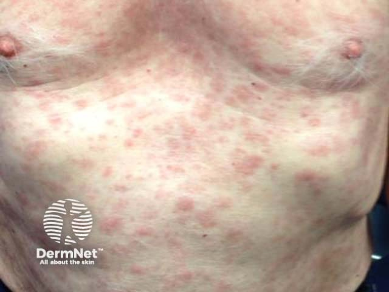
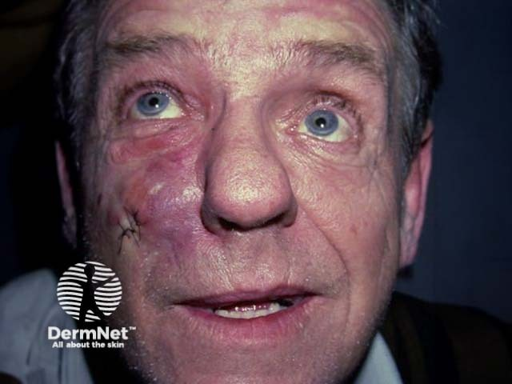
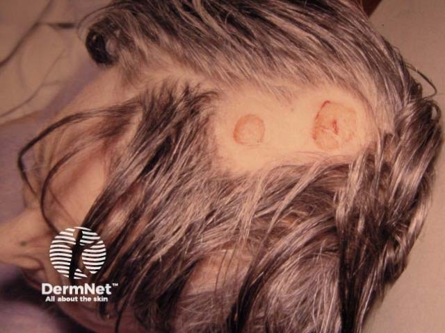

Вторичный и третичный период сифилиса, врожденный сифилис. Лечение и профилактика сифилиса.
Вторичный период сифилиса: общая характеристика и патогенез
Вторичный период открывается тем самым моментом, которого организм ждал с первых дней заражения: бледные трепонемы, размножившиеся в лимфатических узлах, прорываются в кровеносное русло и расходятся по всему телу. Именно гематогенная диссеминация трепонем — рассев возбудителя с током крови — превращает локальную инфекцию в системное заболевание с поражением кожи, слизистых оболочек и внутренних органов. Это происходит через 3–4 месяца после заражения и знаменует конец первичного периода. Риск заражения сифилисом при половом контакте с больным в среднем составляет 45%. При состоявшемся инфицировании чаще всего (90—95%) наблюдается «классическое» течение инфекции.
Кажется, что высыпания при сифилисе — это признак разгара болезни, когда всё самое плохое уже случилось. На деле всё наоборот: появление сыпи означает, что иммунная система начала отвечать. Сыпь возникает там, где трепонемы осели в коже и слизистых, — и она же гаснет, когда иммунный ответ временно загоняет возбудителя вглубь. Именно это чередование атаки и отступления определяет всю картину вторичного периода.
По времени вторичный период длится 2–4 года и с самого начала делится на три фазы, которые сменяют друг друга волнами. Первая фаза — вторичный свежий сифилис (syphilis secundaria recens): первое генерализованное высыпание, наиболее яркое и обильное из всех, какие будут за эти годы.[5, с. 185] Ему сопутствует выраженный полиаденит — увеличение сразу нескольких групп лимфатических узлов, удалённых от ворот инфекции; реакция Вассермана в этот период положительна в 100% случаев. Угасающий твёрдый шанкр ещё может быть виден — он и служит ориентиром: если шанкр сохраняется, перед нами свежий, а не рецидивный процесс.[5, с. 185]
Сыпь держится несколько недель, реже месяцев, а затем спонтанно исчезает — без лечения, без следа. Это вторая фаза: вторичный латентный сифилис (syphilis secundaria latens). Высыпаний нет, самочувствие не нарушено, однако больной остаётся заразным: трепонемы сохраняются в тканях, а серологические реакции не становятся отрицательными.[5, с. 185] Именно здесь кроется эпидемиологическая опасность: человек ни о чём не подозревает и не обращается к врачу.
Затем следует третья фаза — вторичный рецидивный сифилис (syphilis secundaria recidiva): высыпания возвращаются, но картина меняется. Сыпи становится меньше, однако отдельные элементы крупнее по размерам. Рецидивы склонны группироваться, тяготея к складкам кожи, половым органам, слизистым оболочкам. Сопровождающий полиаденит в первом полугодии ещё сохраняется, затем угасает.[5, с. 185] Положительная реакция Вассермана при вторичном рецидивном сифилисе наблюдается в 98—100% случаев. При рецидивном сифилисе возможны и поражения нервной системы — сифилитический менингит, менинговаскулярный сифилис, невриты.[5, с. 185] Эти три фазы — свежий, латентный, рецидивный — не проходят однократно: латентные и рецидивные периоды чередуются несколько раз на протяжении всех 2–4 лет, пока болезнь не перейдёт в третичный период или не будет пролечена.
Что управляет этим ритмом? Механизм следующий. В период манифестации трепонемы размножаются в коже и слизистых, вызывая характерные высыпания. Иммунная система отвечает накоплением антител и клеточными реакциями — и постепенно подавляет поверхностную инфекцию. Высыпания гаснут. Но полной элиминации возбудителя не происходит: трепонемы, укрывшиеся в лимфатических узлах и во внутренних органах, переживают иммунный удар. Через какое-то время они вновь выходят в кровь, оседают в коже — и цикл повторяется. Это так называемый нестерильный, или инфекционный иммунитет: он сдерживает, но не уничтожает возбудителя.
Теперь посмотрите на саму сыпь. Высыпания вторичного периода отличаются рядом общих черт, которые отличают их от воспалительных сыпей при других болезнях: они не вызывают зуда и болезненности, плотны на ощупь, имеют тёмно-красную окраску, чёткие округлые очертания без склонности к слиянию и лишь незначительное шелушение — чаще по краю очага, а не по всей поверхности. Главное: они склонны к самопроизвольному исчезновению без атрофии и рубцевания. Отсутствие рубца — не случайность: воспалительный инфильтрат разрешается, не разрушив дермального матрикса. Это принципиально отличает вторичные сифилиды от третичных, которые оставляют грубые рубцы.
Классификация кожных изменений вторичного периода включает пять групп.[2, с. 114] Первая — пятнистый сифилид, или сифилитическая розеола: пятна округлой или овальной формы размером 1–1,5 см в диаметре, бледно-розовой окраски, не возвышаются над кожей, не сливаются, разрешаются бесследно. Это самое частое и самое раннее проявление вторичного периода. Вторая группа — папулёзный сифилид: узелки округлой формы плотноэластической консистенции; лентикулярный вариант имеет диаметр 0,3–0,5 см. Третья группа — пустулёзный сифилид, возникающий преимущественно у ослабленных больных с пониженной реактивностью. Четвёртая — сифилитическое облысение (alopecia syphilitica): диффузное или мелкоочаговое выпадение волос без воспаления и рубцевания. Пятая — сифилитическая лейкодерма: пигментный сифилид с участками депигментации, чаще на шее («ожерелье Венеры»).
Серологическая картина вторичного периода весьма показательна. Классические серологические реакции (КСР — комплекс реакций типа реакции Вассермана) положительны на всём протяжении вторичного периода.[5, с. 197] Реакция иммобилизации бледных трепонем (РИБТ) положительна у всех больных с начала вторичного периода.[5, с. 186] Реакция иммунофлюоресценции (РИФ) наиболее ценна: она может становиться положительной ещё в конце инкубационного периода и сохраняется положительной на всём протяжении болезни у всех больных.[5, с. 186] Таким образом, сочетание положительных КСР, РИФ и РИБТ в этот период — надёжное серологическое подтверждение диагноза; отрицательный результат какого-либо теста здесь должен настораживать и требует повторного исследования.
Особо выделяют злокачественный вторичный сифилис — форму, которая встречается у истощённых больных с иммунодефицитом. Здесь высыпания склонны к изъязвлению, преобладают папуло-пустулёзные сифилиды, выражены лихорадка и симптомы интоксикации, часто развиваются манифестные поражения нервной системы и внутренних органов.[2, с. 110] Характерна ещё одна деталь: иногда при злокачественном течении латентные периоды полностью выпадают — болезнь рецидивирует непрерывно, без пауз.[2, с. 110] При этом трепонемы в отделяемом высыпаний обнаруживаются с трудом, а серологические реакции нередко отрицательны, что создаёт диагностическую ловушку.[2, с. 110]
Главное, что следует вынести из этого раздела: вторичный сифилис — это системное заболевание с волнообразным течением, в основе которого лежит гематогенная диссеминация трепонем и циклическое взаимодействие возбудителя с иммунной системой. Отсутствие сыпи не означает отсутствия инфекции: в латентной фазе больной остаётся заразным при полностью сохранённой серопозитивности — и это определяет тактику как диагностики, так и противоэпидемических мер.
Розеолёзный сифилид: морфология, клиника, дифференциальная диагностика
Среди всех проявлений вторичного сифилиса одно встречается чаще остальных и нередко оказывается первым, что замечает и сам пациент, и врач. Это розеолёзный сифилид — пятнистая сыпь неостровоспалительного характера, которая сигнализирует о том, что бледная трепонема распространилась по всему организму гематогенным путём. Розеола встречается у 75–80% больных вторичным сифилисом — то есть почти у каждого из четырёх.
Морфологически это воспалительное гиперемическое пятно: по цвету от бледно-розового до насыщенно-розового, по форме округлое или овальное, с нечёткими, как бы размытыми границами. Размер — от чечевицы до ногтя мизинца, в среднем 1–1,5 см в диаметре (размер пятен сифилитической розеолы колеблется от 2 до 25 мм). Пятно не возвышается над кожей, не шелушится, не сливается с соседними элементами. При надавливании предметным стеклом оно исчезает — это прямое следствие сосудистой природы пятна: кровь механически вытесняется из расширенных капилляров. Субъективных ощущений — ни зуда, ни жжения, ни болезненности — нет. Именно поэтому пациенты нередко неделями не обращают на сыпь внимания.
Сыпь появляется толчкообразно: по 10–12 элементов в сутки, и полного своего развития достигает обычно в течение 8–10 дней.[5, с. 191] Затем розеолы существуют 3–4 недели и разрешаются бесследно — ни рубца, ни пигментации.[5, с. 191] Не будь этого механизма самопроизвольного регресса, пришлось бы объяснять остаточные кожные изменения у подавляющего большинства пациентов с вторичным сифилисом.
Излюбленная локализация — боковые поверхности туловища, грудь, верхняя часть живота.[2, с. 115] Реже поражаются верхняя часть бёдер и сгибательные поверхности предплечий, совсем редко — лицо. Пятна располагаются беспорядочно, не образуют геометрических фигур. При рецидивном сифилисе картина меняется: элементов становится меньше, но они крупнее, группируются в дуги и кольца и тяготеют к более ограниченным участкам кожи. Сравните мысленно: при свежем сифилисе — обильная, рассеянная, относительно мелкая сыпь; при рецидивном — скудная, асимметричная, покрупнее.
Помимо типичной формы, выделяют несколько атипичных разновидностей.[2, с. 115] Элевирующая (уртикарная) розеола немного возвышается над кожей и напоминает крапивницу. Сливная возникает при очень обильном высыпании: пятна перекрывают друг друга и образуют сплошные эритематозные поля. Фолликулярная — переходный элемент между розеолой и папулой: на фоне розового пятна проступают мелкие точечные узелки медно-красного цвета. Шелушащаяся розеола покрыта пластинчатыми чешуйками, напоминающими смятую папиросную бумагу, а центр элемента при этом кажется слегка запавшим. Все четыре атипичные формы остаются пятнами — они не изъязвляются и не оставляют рубцов.
Отдельно стоит разобрать эрозивный розеолёзный сифилид — разновидность, которая имеет принципиальное эпидемиологическое значение. На поверхности обычного розеолёзного пятна появляются островки мацерированного эпителия; при их отслоении формируется эрозия. В отделяемом такой эрозии содержится обилие бледных трепонем, поэтому контакт с этими элементами несёт высокий риск заражения. Эрозивный вариант чаще развивается при локализации пятен в складках кожи и на слизистых оболочках, где постоянная влажность провоцирует мацерацию.
На слизистой оболочке зева и мягкого нёба розеолёзные пятна трансформируются в особую форму — эритематозную сифилитическую ангину: сливные тёмно-красные с синюшным оттенком участки с резко очерченными границами, без субъективных ощущений и без лихорадки.[5, с. 191] Обратите внимание на то, чего здесь нет: нет боли при глотании, нет гнойных налётов, нет подъёма температуры — этим сифилитическая ангина принципиально отличается от банальной.
Дифференциальная диагностика розеолёзного сифилида включает несколько дерматозов, с которыми его легче всего спутать.
Розовый лишай Жибера даёт пятна похожего размера, однако каждый элемент имеет характерное шелушение — нежные чешуйки собраны в центре пятна, а по периферии остаётся свободный от чешуек ободок («медальон»). Сыпь следует линиям Лангера и сопровождается зудом. При сифилитической розеоле шелушения нет, зуда нет, пятна не ориентированы по кожным линиям.
Токсикодермия (лекарственная или алиментарная) может давать диффузную пятнистую сыпь, нередко сопровождающуюся зудом и жжением — то есть как раз теми симптомами, которых при розеоле нет. Кроме того, токсикодермия имеет чёткую связь с приёмом препарата или пищевого аллергена, и сыпь появляется быстро, в течение часов, а не толчкообразно в течение 8–10 дней.
Отрубевидный лишай даёт пятна на туловище, что уже само по себе создаёт поверхностное сходство. Однако его пятна имеют выраженное мелкопластинчатое шелушение (симптом Бальцера — йод окрашивает поражённые участки интенсивнее здоровой кожи), цвет от желтоватого до коричневатого, и при просмотре под лампой Вуда они светятся желтовато-зелёным. Главный итог дифференциальной диагностики: розеолёзный сифилид — единственная из этих сыпей, которая не шелушится, не зудит, исчезает при витропрессии и сопровождается положительными серологическими реакциями на сифилис.
Папулёзный сифилид: разновидности и клинические особенности
Папулёзный сифилид — то есть попросту высыпание плотных бесполостных узелков при сифилисе — наряду с розеолой составляет основу клинической картины вторичного периода.[5, с. 191] Если розеола чаще открывает вторичный период, то папулёзный сифилид господствует при рецидивах: именно там он наблюдается особенно часто. При вторичном свежем сифилисе папулы тоже появляются, но позже — спустя 1–2 недели после розеолёзной сыпи и вместе с ней, образуя так называемый пятнисто-папулёзный сифилид.[2, с. 115]

Развивается сыпь толчкообразно: от первого элемента до полной картины проходит 10–14 дней, после чего папулы существуют ещё 4–8 недель и затем бесследно рассасываются — без рубца и без атрофии.[2, с. 115]
Первичный морфологический элемент — дермальная папула, резко отграниченная от окружающей кожи, правильно округлых или овальных очертаний, полушаровидной формы с усечённой или остроконечной вершиной.[2, с. 115] Консистенция плотноэластическая. Цвет в начале розово-красный, затем становится желтовато-красным или синюшно-красным.[2, с. 115] Субъективных ощущений нет, однако если надавить тупым зондом на центр свежей папулы — возникает болезненность: этот приём помогает отличить папулу от банального узелка воспалительного происхождения.[2, с. 115] По периферии разрешающейся папулы появляется воротничок Биетта — то есть попросту узкий кольцевой ободок отслаивающегося рогового слоя, хорошо заметный по краю элемента: он не покрывает всю поверхность, а именно окаймляет её.
В зависимости от размера папул выделяют четыре разновидности. Посмотрите на их сравнение в таблице ниже — она собирает в одном месте все ключевые признаки, по которым эти формы отличают друг от друга.
| Разновидность | Размер | Цвет | Шелушение | Особенности | Период |
|---|---|---|---|---|---|
| Лентикулярный | 3–5 мм | Синюшно-красный, затем желтовато-бурый | Воротничок Биетта по периферии | Наиболее частая форма | Свежий и рецидивный |
| Милиарный | 1–2 мм | Бледно-розовый | Минимальное | Конусовидная, вокруг фолликула; признак тяжёлого течения | Рецидивный |
| Нуммулярный | 2–2,5 см | Буровато- или синюшно-красный | Воротничок Биетта | Длительная пигментация после рассасывания | Преимущественно рецидивный |
| Бляшковидный | Крупные бляшки (слияние) | Медно-красный | По краю бляшки | Очень редко; крупные складки | Рецидивный |
Лентикулярный папулёзный сифилид — самая распространённая разновидность.[2, с. 115] Папулы диаметром 0,3–0,5 см (0.3–0.5 см) чётко отграничены, плоские, с гладкой блестящей поверхностью. Постепенно они приобретают желтовато-бурый оттенок, уплощаются, и по их периферии появляется скудное воротничковое шелушение.[5, с. 191] Встречается как при свежем, так и при рецидивном сифилисе.
Милиарный папулёзный сифилид — редкая форма, и само её появление уже говорит о тяжёлом течении болезни.[2, с. 116] Элементы крошечные — 1–2 мм в диаметре — конусовидные, плотные, располагаются вокруг устья волосяного фолликула.[2, с. 116] Цвет бледно-розовый, из-за чего папулы слабо выделяются на фоне окружающей кожи и легко пропускаются при беглом осмотре.[2, с. 116] Помните: маленький размер элемента здесь не признак доброкачественности — это сигнал тревоги.
Нуммулярный папулёзный сифилид — то есть монетовидный — возникает преимущественно у больных вторичным рецидивным сифилисом.[2, с. 116] Папулы крупные, полушаровидные, с уплощённой вершиной, диаметром 2–2,5 см, буровато- или синюшно-красного цвета, появляются в небольшом количестве и склонны к группировке.[2, с. 116] Главная клиническая особенность этой формы — упорная пигментация, которая остаётся на коже ещё долгое время после того, как папула рассосалась.[2, с. 116]
Бляшковидный сифилид встречается очень редко и образуется там, где нуммулярные или лентикулярные папулы подвергаются постоянному внешнему раздражению: они начинают расти по периферии и сливаются в крупные бляшки.[2, с. 116] Излюбленное место — крупные складки: половые органы, перианальная область, пахово-бедренная складка, подмышечные впадины, область под молочными железами.[2, с. 116]

Посмотрите на снимок выше: на туловище видны множественные рассеянные папулёзные элементы — плотные, округлые, чётко очерченные, без склонности к слиянию. Именно такую картину даёт лентикулярный сифилид при вторичном свежем сифилисе: элементы разбросаны беспорядочно, каждый существует изолированно, и только по самому краю уже начинает угадываться тот воротничок шелушения, о котором шла речь выше.
Помимо четырёх «размерных» форм, выделяют ещё несколько разновидностей, связанных с локализацией и внешним видом.[5, с. 191]
Себорейный папулёзный сифилид располагается на лице, волосистой части головы и по краю лба. Его поверхность покрыта жирными, сальными чешуйками, из-за чего картина напоминает себорейный дерматит. Псориазиформный вариант имитирует псориаз настолько убедительно, что папулёзный сифилид включён в дифференциальный диагноз и псориаза, и красного плоского лишая. Это не академическая тонкость: ошибочное лечение кортикостероидами при нераспознанном сифилисе ухудшает прогноз.
Эрозивный папулёзный сифилид, или мокнущий, возникает в складках кожи и на слизистых оболочках, где постоянное увлажнение и трение приводят к мацерации поверхности папулы: она становится белесоватой, затем эрозируется и начинает мокнуть.[5, с. 191] Из всех разновидностей папулёзного сифилида эта — наиболее заразная, потому что в серозном отделяемом эрозий содержится огромное количество бледных трепонем.[5, с. 191]
Крайней степенью этого процесса становятся широкие кондиломы — вегетирующие папулы, то есть элементы, которые разрастаются вверх, сливаются и гипертрофируются, образуя мясистые разрастания с беловатым налётом разбухшего рогового слоя и серозным отделяемым. Они располагаются в местах постоянного трения и физиологического раздражения — прежде всего в области заднего прохода — и нередко оказываются единственным проявлением вторичного периода у конкретного пациента. Широкие кондиломы имеют медно-красный цвет и широкое инфильтрированное основание без дольчатости.[5, с. 191]
На этих двух снимках ладонных поверхностей кистей хорошо видна ещё одна важная локализация — ладонно-подошвенный папулёзный сифилид. Обратите внимание: элементы выглядят как утолщённые, резко очерченные узелки с гладкой поверхностью эритематозно-бурого или лилово-красного оттенка. По мере роста центр папулы растрескивается, а по её окружности формируется шелушащийся бордюр. Именно это сходство с мозолью — и есть главная ловушка: очень часто больные принимают эту форму сифилиса за обычные мозоли и не обращаются за медицинской помощью. А между тем ладони и подошвы — одна из типичных локализаций папулёзного сифилида при рецидиве.
Широкие кондиломы необходимо отличать от остроконечных кондилом. Остроконечные имеют дольчатое строение и узкое основание — ножку; медно-красного цвета у них нет. Широкие — медно-красные, сидят на широком инфильтрированном основании, дольчатости лишены, а в их отделяемом при тёмнопольной микроскопии обнаруживается большое количество бледных трепонем. Также широкие кондиломы дифференцируют с геморроидальными узлами — те располагаются в просвете прямой кишки, имеют синюшную окраску и болезненны при воспалении.
Итог, который стоит запомнить: при любой плотной папуле на ладонях, подошвах или в перианальной области — даже если пациент уверен, что это мозоль или геморрой, — сифилис должен стоять первым в списке дифференциального диагноза.
Пустулёзный сифилид: поверхностные и глубокие формы
Среди высыпаний вторичного сифилиса пустулёзные формы стоят особняком: они редки и появляются не у каждого. Пустулёзный сифилид — это папула, в центре которой инфильтрат подвергается гнойному расплавлению. Важно понять механизм: первичный элемент всё равно остаётся папулой, и плотный специфический инфильтрат сохраняется в основании у всех разновидностей без исключения. Гной — это не самостоятельное явление, а результат распада уже существующего папулёзного инфильтрата. Именно поэтому ощупав элемент, врач чувствует уплотнение под пустулой — признак, который сразу отличает её от банальных гнойничков.
Возникает такая сыпь у ослабленных, истощённых больных с пониженной реактивностью. Алкоголизм, наркомания, тяжёлые сопутствующие заболевания — вот типичный фон. Появление пустулёзного сифилида расценивается как признак злокачественного, тяжёлого течения сифилиса. Различают пять разновидностей: угревидный (акнеиформный), оспенновидный (вариолиформный), импетигоподобный, сифилитическая эктима и сифилитическая рупия. Первые три — поверхностные, последние две — глубокие. Это деление клинически принципиально: поверхностные формы характерны для вторичного свежего сифилиса, а глубокие встречаются преимущественно при вторичном рецидивном и служат маркером особенно неблагоприятного течения.
Посмотрите на Таблицу 1 — она собирает все пять форм по глубине поражения, характеру корки, исходу и периоду появления. Разберём каждую строку словами, потому что различия между ними не очевидны с первого взгляда.
| Форма | Глубина | Характер корки | Исход | Период появления |
|---|---|---|---|---|
| Угревидный (акнеиформный) | Поверхностная | Мелкая сухая корочка | Медленное рассасывание без рубца | Вторичный свежий |
| Импетигоподобный | Поверхностная | Поверхностная корка в центре папулы | Разрешение без рубца | Вторичный свежий |
| Оспенновидный (вариолиформный) | Поверхностная | Центральная корка на шарообразной пустуле | Разрешение без рубца | Вторичный свежий |
| Сифилитическая эктима | Глубокая | Толстая корка, инкрустированная в кожу | Рубец | Вторичный рецидивный (через полгода и позже) |
| Сифилитическая рупия | Глубокая | Слоистая коническая («устричная») корка | Рубец | Вторичный рецидивный |
Поверхностные формы. Угревидный сифилид — мелкие конические пустулы на плотном папулёзном основании, которые быстро ссыхаются в корочки и медленно рассасываются.[5, с. 192] Импетигоподобный образуется в центре папул: поверхностная пустула ссыхается в корку, не затрагивая глубоких слоёв дермы.[5, с. 192] Оспенновидный отличается шарообразными пустулами, центр которых быстро засыхает в корку; элементы расположены на плотном основании.[5, с. 192] Все три разновидности не оставляют рубцов и наблюдаются, как правило, при вторичном свежем сифилисе.
Глубокие формы — совсем иная картина. Сифилитическая эктима — поздний пустулёзный сифилид, появляющийся через полгода и позже от начала заболевания. Это глубокая округлая пустула, по размеру сравнимая с крупной монетой, которая быстро засыхает в толстую корку, буквально вдавленную, инкрустированную в кожу.[5, с. 192] Когда корка отторгается, под ней обнаруживается язва с характерными круто обрезанными краями и периферическим валиком специфического инфильтрата багрово-синюшного цвета. Эктимы обычно единичны и неизменно оставляют рубцы.
Здесь уместно сравнение из практики: представьте монету, вдавленную в кусок мягкого пластилина — края вокруг неё поднимаются и уплотняются, а сама монета сидит глубоко. Примерно так выглядит корка сифилитической эктимы относительно окружающей кожи: она не лежит сверху, а именно инкрустирована в дерму, и когда её снимают, видна не поверхностная ссадина, а настоящая язва с вертикальными, как бы вырубленными краями.
Сифилитическая рупия — эктимоподобный элемент, но с принципиальным отличием в строении корки. Специфический инфильтрат не однократно распадается, а растёт и распадается повторно, и каждый новый цикл добавляет новый слой засохшего экссудата. В итоге образуется слоистая коническая корка, которую сравнивают с устричной раковиной — она возвышается над кожей конусом из концентрических пластов.[5, с. 192] Как и эктима, рупия обычно единична и заживает рубцом.
Теперь — принципиальный вопрос о контагиозности. Пустулёзные сифилиды содержат гной, и первый импульс — считать их особенно заразными. На деле всё иначе. Бледные трепонемы в содержимом папуло-пустул практически не обнаруживаются: воспалительный экссудат не является их средой. Трепонемы концентрируются в серозном отделяемом эрозивных и мокнущих элементов, а не в гнойном содержимом пустул. Это не означает полной безопасности пустулёзных сифилидов, но контагиозность их существенно ниже, чем у мокнущих папул или эрозивного твёрдого шанкра.
Дифференциальная диагностика глубоких форм требует внимания, потому что сифилитическая эктима внешне напоминает вульгарную эктиму стрептококковой природы. Ключевое различие — воспалительный компонент: вульгарная эктима сопровождается выраженным островоспалительным окружением — покраснением, отёком, болезненностью. Сифилитическая эктима лишена этих признаков: окружающий валик специфического инфильтрата багрово-синюшный, но не горячий и не болезненный. Вульгарная эктима в течение 2–4 недель подвергается рубцеванию; сифилитическая течёт медленнее и упорнее.[5, с. 49] Решающее значение имеют серологические реакции на сифилис и исследование на бледную трепонему — они положительны при сифилитической эктиме.[5, с. 49]
Главное, что следует запомнить из этого раздела: пустулёзный сифилид — не самостоятельная форма высыпаний, а папулёзный сифилид с гнойным расплавлением центра; плотный инфильтрат в основании присутствует всегда; поверхностные формы появляются при свежем вторичном сифилисе и проходят без следа, а глубокие — эктима и рупия — знак рецидивного и злокачественного течения, они оставляют рубцы и требуют особой настороженности при диагностике.
Поражение волос, ногтей и слизистых оболочек при вторичном сифилисе
Кожные высыпания — самое заметное, что видит врач при вторичном сифилисе. Но волосы, слизистые и пигментация кожи говорят о болезни не меньше, а в период рецидива — порой только они и говорят.
Сифилитическая алопеция
Сифилитическая алопеция — выпадение волос, вызванное специфическим инфильтратом в волосяном фолликуле. Инфильтрат сдавливает фолликул изнутри, нарушает питание волоса, и тот выпадает — без воспаления на коже, без зуда, без корок.[2, с. 117] Различают три клинические разновидности: диффузную, мелкоочаговую и смешанную, при которой оба варианта сочетаются у одного больного.[2, с. 117]
Диффузная алопеция начинается остро: волосы на висках редеют, затем поредение охватывает всю волосистую часть головы. Кожа при этом выглядит совершенно нормально — никаких шелушений, очагов воспаления, фолликулярных пробок. Сами волосы меняются: становятся тонкими, сухими, тусклыми. В тяжёлых случаях облысение распространяется на брови, ресницы, бороду и усы. Степень выраженности варьируется широко — от едва заметного поредения, немногим превышающего физиологическую норму, до полного выпадения всех волос, включая пушковые.[2, с. 117]
Мелкоочаговая алопеция выглядит иначе. По всей голове — особенно в области висков и затылка — внезапно появляются множественные мелкие очажки облысения диаметром 0,5–1 см, беспорядочно разбросанные, неправильно округлых очертаний.[2, с. 117] Представьте себе шубу, которую поела моль: именно такую картину описывает классический симптом «меха, изъеденного молью». Плешины не растут по периферии и не сливаются между собой — это принципиально отличает их от гнёздной алопеции, где очаги склонны к периферическому распространению и слиянию. Волосы в очагах выпадают не полностью: происходит резкое поредение, но фолликулярный аппарат сохранён, и именно поэтому через несколько месяцев волосяной покров полностью восстанавливается.[5, с. 193]
При поражении бровей и ресниц обращает на себя внимание симптом Пинкуса — ресницы имеют неодинаковую длину, выглядят «ступенчатообразными».[5, с. 193] В области плешинок доказано наличие бледных трепонем, что подтверждает специфическую природу поражения.[5, с. 193]
Дифференциальный ряд при мелкоочаговой алопеции включает гнёздную алопецию и микозы волосистой части головы. Ключ к правильному диагнозу — характер очагов (не сливаются, не растут) и отсутствие изменений кожи в них, а также серологическое подтверждение сифилиса.
Сифилитическая лейкодерма
Сифилитическая лейкодерма, или пигментный сифилид — своеобразная дисхромия кожи, возникающая при вторичном, преимущественно рецидивном, сифилисе; чаще встречается у женщин.[5, с. 193] Ранее этот симптом был настолько характерен, что получил собственное поэтическое название — «ожерелье Венеры».
Развивается лейкодерма стадийно. Сначала на коже задней и боковых поверхностей шеи — реже на груди, в подмышечных областях, на верхних конечностях — появляется диффузная желтовато-бурая гиперпигментация. Затем, через 2–3 недели, на этом потемневшем фоне возникают беловатые гипопигментные пятна диаметром от 0,5 до 2 см округлых или овальных очертаний.[2, с. 117] Все пятна примерно одинакового размера, располагаются изолированно и не склонны к слиянию.
Различают три клинические разновидности. При пятнистой форме между светлыми пятнами сохраняются широкие прослойки гиперпигментации. При сетчатой (кружевной) пятна почти сливаются, оставляя лишь тонкие полоски гиперпигментированного фона, которые образуют рисунок, напоминающий кружево. При мраморной форме контрастность минимальна, границы пятен нечёткие, кожа производит впечатление «грязной».
Сравните лейкодерму с витилиго и отрубевидным лишаём — двумя главными масками, под которые она может скрываться. При витилиго пятна депигментированы полностью, фона гиперпигментации нет, а серологические реакции на сифилис отрицательные. При отрубевидном лишае — возбудитель Malassezia furfur, проба Бальцера положительная, микроскопия даёт картину «спагетти с фрикадельками», а пятна шелушатся при поскабливании. Сифилитическая лейкодерма не шелушится и существует длительно — месяцами и даже годами.[5, с. 193] Развитие лейкодермы связывают с поражением нервной системы: при ней, как правило, выявляются патологические изменения в цереброспинальной жидкости, хотя бледные трепонемы в пигментированной ткани обычно отсутствуют.[5, с. 193]
Поражение слизистых оболочек
Теперь — разбор случая. Три шага.
Шаг первый: что видит врач. На осмотре — пациент с жалобами на лёгкое першение в горле и осиплость голоса. Слизистая мягкого нёба и зева тёмно-красная, с медным оттенком, поверхность гладкая, очертания чёткие — разлитое пятнистое покраснение, напоминающее эритему, но явно ограниченное от здоровой слизистой. Сыпи на коже нет. Температура нормальная.
Шаг второй: что врач из этого выводит. Картина соответствует папулёзной ангине — специфическому поражению слизистой при вторичном сифилисе, при котором папулёзные элементы занимают область мягкого нёба, миндалин и зева. Папулёзная ангина — это не эрозивная ангина и не банальный фарингит: субъективных ощущений минимум, общих явлений (лихорадки, лимфаденита) нет или они незначительны. Осиплость голоса объясняется папулёзными высыпаниями на слизистой гортани.[5, с. 192] Отсутствие кожных элементов не успокаивает — напротив, именно при рецидивном сифилисе сифилиды слизистых оболочек могут быть единственным клиническим проявлением болезни. Важнее: они содержат большое количество бледных трепонем и потому несут огромную эпидемиологическую нагрузку — передача инфекции при поцелуе или оральных контактах в таких случаях весьма реальна.
Шаг третий: что врач делает дальше. Немедленно назначает серологическое обследование в полном объёме, осматривает кожу и волосы в поисках других сифилидов, изолирует пациента от половых и бытовых контактов и при подтверждении диагноза начинает специфическое лечение. Откладывать нельзя: слизистые очаги заразны вне зависимости от того, есть ли кожная сыпь.
Помимо папулёзной ангины, вторичный сифилис вовлекает слизистые и в форме розеолёзных пятен — эритематозных участков на слизистой рта, зева и мягкого нёба. Пораженная область имеет застойно-красный цвет, иногда с медным оттенком, гладкую поверхность и чёткие очертания. Розеолёзные сифилиды слизистых диагностируют как специфическую эритематозную ангину. Наконец, сифилитический назофарингит — ещё одна форма поражения, при которой специфический эрозивно-папулёзный процесс захватывает передние отделы носовых ходов, вызывая слизисто-гнойное отделяемое и затруднение носового дыхания; у детей грудного возраста это проявляется как сифилитический насморк, делающий акт сосания невозможным.[5, с. 196]
Главное, что следует вынести из этого раздела: поражения волос и слизистых при вторичном сифилисе нередко существуют без кожной сыпи — и именно тогда они становятся единственным источником заражения и единственной зацепкой для диагноза.
Поражение внутренних органов, костно-мышечной и нервной систем при вторичном сифилисе
Вторичный сифилис — это не только сыпь. Когда бледная трепонема расходится по организму с током крови и лимфы, она оседает буквально везде: в оболочках мозга, стенке сердца, печени, почках, надкостнице. Все поражения этого периода имеют воспалительный характер — не деструктивный, не гранулематозный, как будет в третичном, а именно воспалительный, обратимый. Это принципиально: адекватное специфическое лечение устраняет их быстро и полностью.
Один из самых верных спутников вторичного периода — специфический полиаденит. Увеличиваются сразу несколько групп лимфатических узлов: не только поверхностные, но и глубокие, вплоть до медиастинальных и ретроперитонеальных. Полиаденит сопровождает вторичные сифилиды на протяжении первого полугодия болезни — он как немой свидетель гематогенного рассева, которого на коже уже не видно.
Теперь посмотрите на таблицу ниже — в ней собраны органные поражения вторичного периода, их клинические проявления и судьба после лечения. Каждая строка стоит того, чтобы её разобрать словами, потому что за каждой — конкретная клиническая ситуация, в которой вы рискуете не подумать о сифилисе.
| Орган / система | Клинические проявления | Обратимость |
|---|---|---|
| Нервная система | Асимптомный и манифестный сифилитический менингит, менинговаскулярный сифилис, менингомиелит, невриты, полиневриты, невралгии | Полная при лечении |
| Органы чувств | Тугоухость, паренхиматозный кератит, увеит, хориоретинит, неврит зрительного нерва | Полная при раннем лечении |
| Сердце | Сифилитический миокардит (наиболее частая форма поражения сердца) | Полная при лечении |
| Печень | Острый сифилитический гепатит | Полная при лечении |
| ЖКТ | Острый сифилитический гастрит, сифилитическая язва желудка | Полная при лечении |
| Почки | Сифилитический нефроз, сифилитический нефрит | Полная при лечении |
| Кости и суставы | Диффузные периоститы (у 5% больных), ночные оссалгии, полиартритический синовит, гидрартроз, остеомиелит | Полная при лечении |
Разберём каждую строку. Сердце: самая частая форма поражения при вторичном сифилисе — сифилитический миокардит. Аортит — удел третичного периода; здесь воспаление захватывает мышцу, а не стенку аорты. Печень: острый сифилитический гепатит может стать неожиданной находкой при обследовании пациента с кожными высыпаниями — его никто не ждёт. Почки вовлекаются в виде нефроза или нефрита. Желудок — в виде гастрита или язвы. Всё это — картины, при которых пациент попадает сначала к терапевту, гастроэнтерологу или нефрологу, и именно там нужно помнить о сифилисе как возможной причине. Ключевая закономерность, объединяющая всю таблицу: висцеральные поражения вторичного периода быстро проходят после специфического лечения.
Перейдём к костям и суставам. Оссалгия — это боль в костях, не связанная с травмой или опухолью, возникающая здесь в результате воспаления надкостницы. При вторичном сифилисе у 5% больных развиваются диффузные периоститы — воспаление надкостницы — и остеопериоститы, когда в процесс вовлекается и кость. Излюбленное место — длинные трубчатые кости нижних конечностей, реже страдают кости черепа и грудной клетки. Характернейший признак, который помогает заподозрить диагноз: боли усиливаются ночью и стихают днём. Пациент жалуется на боли в голенях по ночам — и это может быть не «усталость», не плоскостопие, не варикоз, а периостит при вторичном сифилисе. Суставы вовлекаются в виде полиартритического синовита с накоплением жидкости — гидрартроза.
Теперь нервная система. Сифилитический менингит — воспаление мозговых оболочек, вызванное бледной трепонемой, — при вторичном сифилисе нередко протекает асимптомно: никакой ригидности затылка, никакой головной боли, только изменения в цереброспинальной жидкости при пункции. Это называют скрытым, или латентным, менингитом. Манифестный вариант — острый генерализованный менингит с классической клиникой — встречается реже, но его тоже нужно знать. Наконец, менинговаскулярный сифилис — поражение, при котором воспаляются не только оболочки, но и стенки мозговых сосудов. Это уже другой масштаб угрозы: воспалённая сосудистая стенка способна привести к тромбозу и ишемическому инсульту у молодого человека. Именно поэтому ранний нейросифилис — это поражение мезенхимы: оболочек и сосудов, а не нейронов, как при позднем нейросифилисе. Дополнительно при вторичном сифилисе возможны невриты черепных нервов, полиневриты и невралгии.
Теперь о том, почему цифра «5%» при костных поражениях заслуживает особого внимания. Посчитайте: вторичный сифилис охватывает сотни тысяч пациентов в мире ежегодно. Пять процентов от этого числа — это тысячи людей с болями в костях, которые придут к ортопеду или ревматологу. Для сравнения: асимптомный менингит при вторичном сифилисе выявляется при пункции значительно чаще, чем 5% — то есть поражение нервной системы встречается на порядок чаще, чем его выявляют клинически, потому что большинство случаев протекает без симптомов. Это и есть ключевое соотношение: клинически «тихое» поражение нервной системы — правило, а не исключение. На практике это значит: при вторичном сифилисе нужно думать о состоянии ЦНС даже тогда, когда пациент ни на что неврологическое не жалуется.
На снимке выше — волосистая часть головы пациента с участком, лишённым волос. Обратите внимание: это не гнёздная алопеция с чёткими округлыми проплешинами. Изменение выглядит иначе — неравномерное, с сохранёнными волосами среди очага. Именно такой рисунок описывают как «мех, изъеденный молью»: характерная черта сифилитической алопеции вторичного периода. Поражение обратимо — волосы вырастают после лечения.
Итог раздела прост и важен: вторичный сифилис — системное заболевание, а не кожная болезнь с несколькими попутными симптомами. Трепонема оседает повсюду, но воспаление, которое она вызывает на этом этапе, остаётся обратимым. Именно это отличает второй период от третьего — и именно поэтому своевременно поставленный диагноз здесь так важен.
Третичный период сифилиса: бугорковый и гуммозный сифилиды
Кажется, что третичный сифилис — это то, что бывает с запущенными, совсем нелечёными больными: редкость и почти исключение. На деле треть больных не получает полноценного лечения по самым разным причинам — и третичный период развивается примерно у 40% нелечёных пациентов, как правило на 3–4-м году болезни.[5, с. 194] Переходу способствуют неполноценное или полностью отсутствующее лечение в предыдущих стадиях, тяжёлые сопутствующие заболевания, плохие бытовые условия.[5, с. 194] Это не экзотика — это закономерность, если болезнь идёт своим ходом.


.jpg)
Третичный период принципиально отличается от вторичного по самому характеру поражений. Вторичный сифилис — это обилие высыпаний, рассеянных по телу, без следов. Третичный — напротив: проявления локализованные, органные, но деструктивные, а не пролиферативные. Они оставляют после себя рубцы или рубцовую атрофию. Поражаться могут кожа и слизистые оболочки, кости, сосудистая и нервная системы, внутренние органы — и всё это при малом числе трепонем и малой заразительности. Классические серологические реакции при позднем третичном сифилисе могут быть отрицательными у 1/3 больных, что диагноза не отменяет.
Морфологическая основа всего третичного периода единая: бугорковый сифилид и гуммозный сифилид — это патогистологически хронические инфекционные гранулёмы. Общие черты у них тоже есть: элементов мало, они склонны к группированию, залегают глубоко, образуют инфильтраты и язвы, субъективных ощущений — боли или зуда — не вызывают. Но глубина поражения, масштаб разрушений и возможные осложнения у этих двух сифилидов разные. Для наглядности посмотрите на сравнительную таблицу ниже — она сводит главные различия воедино. Но прочитайте и то, что идёт следом: в таблице — скелет, в тексте — смысл каждой кости.
| Признак | Бугорковый сифилид | Гуммозный сифилид |
|---|---|---|
| Глубина залегания | Толща дермы | Гиподерма |
| Размер элемента | 1 мм — 1,5 см | Узел от 5–10 мм, может достигать нескольких сантиметров |
| Цвет кожи над элементом | Тёмно-красный, затем синюшно-красный | Медно-красный → буровато-красный → багровый |
| Характерный признак язвы | Валикообразные края, мозаичный рубец | Гуммозный стержень — грязно-серые некротические массы на дне |
| Исход | Мозаичный пигментированный рубец или рубцовая атрофия; на рубце новые бугорки не появляются | Звёздчатый рубец с гиперпигментацией; возможна рубцовая атрофия |
| Типичная локализация | Разгибательная поверхность верхних конечностей, туловище, лицо | Голени, голова, предплечья, грудина; слизистые |
| Осложнения | Рубцовые деформации кожи | Иррадиация на кость, надкостницу, сосуды; разрушение хрящей и костей лица; угроза жизни |
| Дифференциальная диагностика | Туберкулёзная волчанка, папуло-некротический туберкулёз, розовые угри, кольцевидная гранулёма, туберкулоидная лепра | Липома, колликвативный туберкулёз, уплотнённая эритема Базена, лепрозная лепра, гипертоническая язва голени, плоскоклеточный рак |
Итак, бугорковый сифилид залегает в толще дермы, гуммозный — глубже, в гиподерме. Первый даёт элементы от 1 мм до 1,5 см, второй — крупнее. Исход у обоих — рубец, но разного вида: после бугорков он мозаичный и пёстрый, после гуммы — звёздчатый или втянутый, с гиперпигментацией по краям. Осложнения тоже несопоставимы: бугорки оставляют некрасивые рубцы на коже; гуммы способны уничтожить кость и убить пациента — и это не преувеличение, к чему вернёмся ниже.
Бугорковый сифилид
Основной элемент бугоркового сифилида — бугорок: плотное, полушаровидное, бесполостное образование, формирующееся в толще дермы. Размер от 1 мм до 1,5 см, цвет поначалу тёмно-красный или желтовато-красный, затем становится синюшно-красным или буроватым.[2, с. 119] Поверхность сначала гладкая и блестящая. Субъективных ощущений нет.
Типичные места — разгибательная поверхность верхних конечностей, туловище, лицо. Очаг занимает небольшой участок кожи и расположен асимметрично. Бугорки появляются толчкообразно, развиваются медленно, и всё течение — от нескольких месяцев до нескольких лет.
Спустя несколько недель или месяцев бугорок размягчается и изъязвляется. Язва округлая, довольно глубокая, с валикообразными краями.[5, с. 194] После заживления остаётся то, что называют мозаичным рубцом: отдельные рубчики залегают на разной глубине, а потому различаются и по рельефу, и по цвету — розовый, бурый, белесоватый. Выглядит этот рубец как лоскутное одеяло из мелких неравномерных фрагментов. Ключевая черта, отличающая бугорковый сифилид от многих других гранулём: на уже сформировавшемся рубце новые бугорки никогда не появляются.
Разновидностей бугоркового сифилида четыре.[2, с. 119] Сгруппированный — наиболее частый вариант: число бугорков обычно не превышает 30–40, и они находятся одновременно на разных стадиях — одни только что появились, другие изъязвились, третьи уже зажили рубцом. Серпигинирующий, или ползучий: очаг распространяется эксцентрически или в одном направлении, свежие бугорки сливаются в тёмно-красный подковообразный валик шириной от 2 мм до 1 см, по краю которого продолжают появляться новые элементы — очаг медленно «ползёт». Площадкой: отдельных бугорков не видно, они сливаются в бляшки 5–10 см, плотные, буроватого или тёмно-багрового цвета; регресс идёт либо сухим путём с рубцовой атрофией, либо через изъязвление. Карликовый — редкость: бугорки 1–2 мм, расположены отдельными группами и напоминают лентикулярные папулы.[2, с. 120]
Посмотрите на снимок волосистой части головы выше. Здесь хорошо виден участок с уже сформировавшимися элементами бугоркового сифилида: рельеф кожи неровный, бугорки на разных стадиях эволюции. Обратите внимание на пёструю, разноуровневую поверхность — именно это и есть начало формирования того мозаичного рубца, о котором шла речь: каждый бугорок оставит свой фрагмент на своей глубине, и итоговый рисунок будет непохож на однородный рубец от ожога или разреза.
Гуммозный сифилид
Гумма — это воспалительный узел шаровидной формы, плотной консистенции, залегающий в гиподерме. Именно в этом её принципиальное отличие от бугорка: глубже, крупнее, разрушительнее. Название происходит от латинского gummi — камедь, густой сок, выступающий у деревьев при повреждении коры. Аналогия точная: при вскрытии из узла выделяется клейкая вязкая жидкость.
Стадии развития гуммозного сифилида разворачиваются последовательно. Вначале — безболезненный узел 5–10 мм, шаровидный, плотноэластический, не спаянный с кожей. Постепенно увеличиваясь, он спаивается с окружающей клетчаткой и кожей и выступает над ней в виде полушария. Кожа над гуммой сначала бледно-розовая, затем буровато-красная, багровая. В центре появляется флуктуация — и гумма вскрывается: из узла выделяется 1–2 капли клейкой жёлтой жидкости с крошкообразными включениями. Отверстие расширяется и превращается в язву.
Гуммозная язва — круглая, с плоскими, валикообразно возвышающимися, неподрытыми краями. На её дне крепко сидит гуммозный стержень — грязно-серые или серозно-жёлтые некротические массы, которые невозможно снять, не повредив подлежащие ткани. После отторжения стержня язва рубцуется. Субъективных ощущений, как правило, нет.
Гуммы бывают единичными, сгруппированными и в виде диффузного гуммозного инфильтрата. Диффузные инфильтрации возникают самостоятельно или при слиянии нескольких гумм; при распаде они образуют обширную язвенную поверхность с фестончатыми очертаниями, заживающую рубцом.[2, с. 120] Отдельная форма — фиброзные гуммы, или околосуставные узловатости: результат фиброзного перерождения гумм, они локализуются вблизи разгибательных поверхностей крупных суставов, безболезненны, хрящевидной плотности величиной 1,5–2 см (1.5–2 см), кожа над ними не изменена.

На этом снимке — лицо пациента с третичным сифилисом. В области носа и центральной зоны лица видна деформация: нос уплощён и провален в переносице. Это «седловидный нос» — результат разрушения носовой перегородки гуммозным процессом. Такая деформация необратима и наглядно показывает, о чём идёт речь, когда говорят о деструктивном характере третичных поражений.
Иррадиация гуммы и поражение слизистых
Самое серьёзное в гуммозном сифилиде — то, что гумма не остаётся в гиподерме. Она способна распространяться на соседние структуры: надкостницу, кость, стенки сосудов. Это называют иррадиацией гуммы — и именно здесь третичный сифилис перестаёт быть только кожной болезнью. Разрушение стенки крупного сосуда означает аррозивное кровотечение. Это прямая угроза жизни, и она реальна.
Особое место занимают гуммы слизистых оболочек. Поражение носовой полости начинается с гуммы перегородки; перфорация и разрушение хряща дают тот самый «седловидный нос», хорошо видимый на снимке выше. Гуммы нёба приводят к его перфорации — и тогда ротовая полость сообщается с носоглоткой. Гуммы гортани нарушают дыхание и голосообразование, гуммы языка и зева — глотание и речь. Всё это — тяжёлые функциональные расстройства, которые даже после лечения оставляют стойкие деформации.
Главный практический вывод раздела: третичный сифилис — не просто косметическая проблема. Бугорковый сифилид оставляет мозаичные рубцы на коже; гуммозный может уничтожить кость, перфорировать нёбо, разрушить нос и вызвать смертельное кровотечение из сосуда. Именно поэтому лечение сифилиса в ранних стадиях — не вопрос предпочтений, а вопрос предотвращения необратимых последствий.

Поражение внутренних органов, костей и нервной системы при третичном сифилисе
Третичный сифилис развивается примерно у 40% нелечёных больных на 3–4-м году заболевания.[5, с. 194] К этому времени трепонемы глубоко укрылись в тканях, иммунный ответ перестроился с острого воспаления на хроническую гранулематозную реакцию — и именно она теперь наносит главный урон. Проявления третичного периода практически не заразны: в глубине каждого инфильтрата обнаруживаются лишь единичные трепонемы. Но малое число возбудителей ничуть не смягчает разрушений — скорее наоборот: иммунная система атакует «призрака», и под удар попадают собственные ткани. В любом внутреннем органе могут возникать ограниченные гуммы или диффузные гуммозные инфильтрации, а также дистрофические процессы; их морфологическая основа — инфекционная гранулема.
Прежде чем разобрать каждую систему, посмотрите на таблицу ниже — она даёт общий контур того, что происходит с разными органами, какую форму принимает поражение и чем оно заканчивается. Каждая строка будет разобрана словами.
| Орган / система | Нозологическая форма | Исход |
|---|---|---|
| Аорта | Сифилитический мезаортит; аневризма аорты; аортальная недостаточность | Разрыв аневризмы; сердечная недостаточность; внезапная смерть |
| Кости (большеберцовые, предплечье, череп) | Гуммозный остеопериостит (ограниченный и диффузный); гуммозный остеомиелит; негуммозный остеопериостит; сифилитический артрит | Деструкция кости; патологические переломы; деформация |
| Головной и спинной мозг | Спинная сухотка (табес); прогрессивный паралич; гуммы мозга; табопаралич | Глубокая инвалидизация; деменция; летальный исход |
| Печень, лёгкие, желудок и другие органы | Ограниченные гуммы; диффузная гуммозная инфильтрация | Рубцовая деформация органа; функциональная недостаточность |
Начнём с сердечно-сосудистой системы — именно она даёт самый грозный исход. Сифилитический мезаортит — воспаление средней оболочки аорты, медии — развивается, когда гранулематозный процесс разрушает эластические и мышечные волокна стенки сосуда. Стенка теряет упругость, растягивается, и формируется аневризма — мешкообразное выпячивание, которое может достигать огромных размеров и в любой момент разорваться. Параллельно воспаление распространяется на устье аорты: кольцо клапана деформируется, створки перестают смыкаться — возникает аортальная недостаточность с характерным диастолическим шумом и усиленной пульсацией периферических артерий. Не будь механизма компенсаторной гипертрофии левого желудочка, декомпенсация наступала бы немедленно. В итоге третичный сифилис приводит к инвалидизации, а нередко и к летальному исходу — учебник прямо указывает на 10% смертность среди больных третичным сифилисом.
Поражение костей при третичном сифилисе разнообразно, но имеет характерные «любимые» места. Чаще всего страдают большеберцовые кости, реже — предплечье, ключица, грудина, череп и позвонки. Основные формы — гуммозный остеопериостит (ограниченный или диффузный), когда гранулема формируется в надкостнице, и гуммозный остеомиелит, когда процесс захватывает и костную ткань. Кроме гуммозных форм, встречаются и негуммозные остеопериоститы — диффузное продуктивное воспаление надкостницы без образования типичной гранулемы. При поражении большеберцовой кости она постепенно дугообразно изгибается — так называемая «саблевидная голень». Сифилитический артрит чаще поражает крупные суставы и протекает без выраженного выпота, с умеренной болезненностью при движениях.
Посмотрите на снимок выше: на волосистой части головы хорошо виден участок, лишённый волос, с рубцово изменённой кожей — это исход гуммозного поражения мягких тканей волосистой части головы. Обратите внимание на форму очага: края чёткие, кожа западает по центру и уплотнена по периферии — именно так выглядит гумма после рубцевания. Это не облысение от дистрофии волосяных фолликулов, как при вторичном сифилисе, а глубокий деструктивный процесс с частичным разрушением надкостницы.
Теперь — поражение нервной системы, которое образует отдельный раздел патологии: нейросифилис. По характеру изменений его делят на ранний и поздний — и это деление принципиально, потому что речь идёт о принципиально разных тканях и принципиально разных перспективах. Ранний нейросифилис — преимущественно мезенхимный процесс, затрагивающий мозговые оболочки и сосуды головного и спинного мозга; он развивается в первые 5 лет после заражения и характеризуется экссудативно-воспалительными и пролиферативными изменениями. Воспаление здесь потенциально обратимо — сосуд можно «потушить». Совсем иначе — поздний нейросифилис: это преимущественно эктодермальный процесс, поражающий нервную паренхиму головного и спинного мозга; развивается он через 5 лет и более с момента заражения, и в нём преобладают дегенеративно-дистрофические изменения. Нейрон, погибший при дегенерации, не восстанавливается.
Формы позднего нейросифилиса — три, и каждая заслуживает отдельного слова. Спинная сухотка, или табес (tabes dorsalis), — это деструкция нервной ткани в задних корешках, задних столбах и оболочках спинного мозга. Клинически она проявляется «стреляющими» болями, нарушением глубокой чувствительности, сенситивной атаксией (больной не чувствует положения ног и при ходьбе смотрит под ноги), а также характерным расширением зрачков без реакции на свет при сохранённой конвергенции — симптом Аргайла Робертсона. Прогрессивный паралич — дегенеративно-дистрофические изменения коры лобных долей; он начинается с лёгких изменений характера и памяти, а заканчивается глубокой деменцией. Третья форма — табопаралич, сочетание спинной сухотки и прогрессивного паралича одновременно. Кроме этих форм, в мозге могут возникать ограниченные гуммы — с очаговой неврологической симптоматикой в зависимости от локализации.
Отдельного внимания заслуживает серологическая картина третичного периода — она нередко вводит в заблуждение. Комплекс серологических реакций (КСР) сохраняется положительным в первые годы третичного периода, однако при позднем третичном сифилисе может стать отрицательным у 1/3–1/2 больных.[5, с. 197] Отрицательный КСР не исключает диагноза. Именно поэтому при подозрении на третичный сифилис и нейросифилис ключевую роль играют специфические реакции: РИБТ (реакция иммобилизации бледных трепонем) — она положительна у всех больных начиная со вторичного периода, и РИФ (реакция иммунофлюоресценции) — наиболее ценная, поскольку сохраняется положительной на всём протяжении болезни у всех больных.[5, с. 186]
Необходимо помнить об одном особом варианте течения. При злокачественном сифилисе третичные сифилиды могут появляться уже через год после заражения — так называемое галопирующее течение; при этом серологические реакции нередко отрицательны, однако способны стать положительными после начала лечения. Это ещё одно напоминание: диагноз третичного сифилиса не равен положительной реакции Вассермана. Решающее значение при позднем и злокачественном течении имеют РИБТ и РИФ, которые остаются надёжными там, где КСР уже «замолчал».
Врождённый сифилис: патогенез, классификация и поражение плода
Приобретённый сифилис начинается с твёрдого шанкра на месте внедрения трепонемы — с первичного очага. Врождённый сифилис, то есть попросту инфекция, переданная плоду ещё в утробе, устроен принципиально иначе: трепонемы попадают в организм ребёнка не через кожу или слизистые оболочки, а через кровь, минуя входные ворота. Поэтому первичного периода при врождённом сифилисе не существует вовсе. Ребёнок рождается уже с распространённой инфекцией — сразу во вторичной или третичной стадии, в зависимости от того, когда именно произошло заражение и сколько времени прошло.
Путь трепонем к плоду лежит через плаценту. Однако здоровая плацента служит барьером: бледные трепонемы не способны проникнуть сквозь неё в неизменённом виде. Сначала должна пострадать сама плацента, и лишь затем открывается дорога к плоду. Поражённая плацента — сифилис плаценты, то есть попросту специфическое воспаление и перестройка ткани плацентарного органа — резко увеличивается в размерах: её масса нарастает настолько, что соотношение масс плаценты и плода достигает 1:4–1:3 вместо обычного 1:6–1:7. При этом ткань становится хрупкой, рыхлой, легко рвётся при исследовании. Функционально такая плацента неполноценна: она хуже обеспечивает плод питательными веществами и кислородом, и именно эта неполноценность запускает цепочку тяжёлых последствий.
Когда барьерная функция плаценты нарушена, бледные трепонемы проникают к плоду двумя путями. Основной — через пупочную вену, то есть непосредственно в венозную кровь плода. Реже трепонемы идут через лимфатические щели пуповины. Попав в кровоток, возбудители разносятся по всем органам. Прежде всего поражается печень — она страдает первой, увеличивается и становится плотной в результате диффузного воспаления. Затем в процесс вовлекаются селезёнка, поджелудочная железа и надпочечники. Костная система также не остаётся интактной: развиваются специфические изменения в зонах роста.
Трансплацентарное заражение происходит не ранее 16-й недели беременности — по одним данным с 10-й недели, чаще всего на 4–5-м месяце. До этого срока плацентарный барьер, по всей видимости, непреодолим для трепонем. Поражение плода разворачивается преимущественно на 5–6-м месяце внутриутробного развития. Функциональная недостаточность поражённой плаценты в сочетании с генерализованным воспалением внутренних органов плода неизбежно ведёт к внутриутробной гибели — на 6–7-м месяце беременности.
Важно учитывать, что способность больной матери передавать инфекцию потомству не остаётся постоянной. Согласно закону Кассовича, передача сифилиса происходит преимущественно в первые 3 года после заражения матери, а затем эта способность постепенно угасает. Отсюда и разнообразие исходов беременности при сифилисе: возможны мертворождение, рождение живого ребёнка с активными проявлениями болезни, рождение ребёнка с положительными серологическими реакциями, но без симптомов, и наконец — при давности инфекции у матери более 2 лет — рождение внешне здорового ребёнка.
Мертворождённый плод при сифилисе имеет характерный облик. Кожа его ярко-красная, складчатая, эпидермис разрыхлён и сползает пластами — это мацерация, то есть попросту размягчение и отслоение тканей в результате длительного нахождения в патологически изменённых условиях. Сам плод меньше по размерам и массе, чем положено сроку. Представьте себе ребёнка с кожей, которая буквально сходит слоями, — это не посмертное явление, а прижизненное следствие системного воспаления. Поражены все внутренние органы и костная система.
Одна из диагностических трудностей врождённого сифилиса состоит в том, что обнаружить трепонемы в ткани плаценты непросто: возбудители здесь распределены неравномерно и в небольших количествах. Значительно надёжнее искать их в пуповине — именно там концентрация трепонем выше и исследование даёт результат чаще.
Классификация врождённого сифилиса строится по возрасту, в котором проявляется болезнь, и соответствует логике приобретённого сифилиса. Первая форма — сифилис плода, то есть попросту внутриутробное поражение до рождения, заканчивающееся, как правило, мертворождением или поздним выкидышем на 6–7-м месяце. Далее следует ранний врождённый сифилис — он делится на сифилис грудного возраста (до 1 года) и сифилис раннего детского возраста (от 1 года до 4 лет). Клинически ранний врождённый сифилис соответствует вторичному приобретённому: те же диссеминированные поражения кожи и слизистых оболочек, та же системность процесса. Поздний врождённый сифилис манифестирует после 4 лет и по своей картине близок к третичному приобретённому — с гуммами, бугорками и органными поражениями. Наконец, скрытый врождённый сифилис — это состояние, при котором клинических проявлений нет, но серологические реакции положительны.
Ключевой вывод раздела: врождённый сифилис возможен лишь после предварительного поражения плаценты, инфицирование плода происходит не ранее 16-й недели беременности через пупочную вену, а исход беременности — от мертворождения до рождения практически здорового ребёнка — определяется прежде всего давностью и активностью инфекции у матери.
Ранний врождённый сифилис: клиника кожи, слизистых и костей
Новорождённый с тяжёлым врождённым сифилисом выглядит так, словно прожил долгую жизнь. Кожа дряблая, складчатая, лицо морщинистое, землисто-бледное — «старческое», как его и называют в клинике. Голова непропорционально велика из-за гидроцефалии, родничок напряжён, вены на голове расширены, ребёнок беспокоен. Масса тела мала, общее развитие задержано. Именно этот облик — первый диагностический сигнал ещё в родильном зале. Новорождённые с такими тяжёлыми проявлениями нежизнеспособны и гибнут в первые часы или дни от функциональной несостоятельности внутренних органов и общего истощения. У тех, кто выживает, клиника либо обнаруживается сразу после рождения, либо разворачивается в первые 3–4 месяца жизни.
Нет органа и системы, которые не могли бы быть поражены сифилисом в грудном возрасте.[5, с. 196] Но чаще всего страдают кожа, слизистые оболочки и кости — и именно с них начинают диагностический поиск.[5, с. 196]
Поражения кожи
Сифилитическая пузырчатка новорождённых (pemphigus syphiliticus neonatorum) — самое раннее и наиболее характерное проявление.[5, с. 196] Пузыри размером с горошину или вишню располагаются на ладонях, подошвах, предплечьях и голенях — строго на инфильтрированном основании, окружённом зоной синюшно-красного папулёзного инфильтрата. Содержимое сначала серозное, затем гнойное, иногда геморрагическое. В жидкости пузырей находят бледных трепонем в огромном количестве — такой ребёнок чрезвычайно заразен при контакте.[5, с. 196] Отличительная черта: поражены именно ладони и подошвы, где пузыри у новорождённых вообще редки, что сразу настораживает опытного врача.
Диффузная инфильтрация Гохзингера — второй патогномоничный симптом. Плотно-эластическое, резко отграниченное утолщение кожи захватывает подошвы, ладони, лицо и волосистую часть головы. Кожа при этом напоминает натянутую подошвенную кожу обуви — такое сравнение точно передаёт её консистенцию и блеск. Трещины в окружности рта идут радиально и оставляют после себя пожизненные лучистые рубцы Робинсона–Фурнье — по ним педиатр или стоматолог может заподозрить перенесённый сифилис даже у взрослого человека, который о нём не знает.
Посмотрите на фотографию ниже.

На этом клиническом снимке видна верхняя часть лица и волосистая часть головы ребёнка с ранним врождённым сифилисом. Обратите внимание на характерный вид кожи: она уплотнена, отёчна, сероватого оттенка — именно так выглядит диффузная инфильтрация в области лица. Складчатость кожи лба и общая пастозность дают тот самый «старческий» вид, о котором говорят клиницисты. Это не просто бледность — это следствие специфического воспалительного пропитывания дермы.
Кроме этих двух патогномоничных симптомов, при раннем врождённом сифилисе наблюдаются все разновидности вторичных сифилидов. Розеола у грудных детей склонна к слиянию и шелушению — в отличие от «взрослой» розеолы, которая не сливается. Папулёзные высыпания быстро эрозируются и пустулизируются. Кожным сыпям часто предшествует повышение температуры тела. Выпадение волос принимает форму диффузной или мелкоочаговой сифилитической алопеции. При врождённом сифилисе раннего детского возраста (от 1 до 4 лет) на коже преобладают крупнопапулёзные мокнущие высыпания типа широких кондилом, на слизистых — эрозивные папулы.
Поражение слизистых оболочек
Сифилитический насморк — специфический эрозивно-папулёзный гиперпластический передний ринит. Носовые ходы сужаются, из носа вытекает слизисто-гнойное отделяемое, ссыхающееся в корки. Дыхание через нос резко затруднено, и ребёнок не может сосать грудь: он задыхается при каждой попытке кормления. Если процесс прогрессирует, изъязвление папулёзного инфильтрата носовой перегородки ведёт к её разрушению и деформации носа — седловидного или так называемого «козлиного».[5, с. 196] На слизистой рта и зева появляются папулы, склонные к изъязвлению.[5, с. 196]
Поражение костей
Остеохондрит Вегнера (osteochondritis syphilitica) — поражение зоны предварительного обызвествления на границе хряща и кости. Трепонема поселяется именно здесь, нарушая нормальный рост кости. Зона хрящевого роста становится рыхлой, неравномерно обызвествлённой; рентгенологически здесь видна характерная «пилообразная» линия вместо ровной. Последствие — патологический перелом в зоне остеохондрита.
Патологический перелом в зоне остеохондрита проявляется как псевдопаралич Парро: конечность ребёнка свисает вяло и неподвижно, и неопытный наблюдатель думает о параличе — периферическом или центральном. Разница видна при пассивном движении: при псевдопараличе оно болезненно, при настоящем параличе — нет. Остеохондриты иногда заканчиваются патологическими переломами костей конечностей.[5, с. 196]
Помимо остеохондрита, развиваются периоститы и остеопериоститы. При многократно рецидивирующих остеопериоститах с оссификацией на передней поверхности большеберцовой кости откладываются массивные костные наслоения — формируются ложные саблевидные голени. Периоститы костей черепа приводят к характерным деформациям: ягодицеобразному черепу и олимпийскому лбу. У детей старше 4 месяцев кожные проявления становятся ограниченнее, а в костях уже преобладают явления периостита.[5, с. 196]
Поражение внутренних органов и нервной системы
Печень и селезёнка увеличиваются почти всегда: специфическая инфильтрация и разрастание соединительной ткани нарушают их функцию.[5, с. 196] Именно первичное поражение печени у плода подтверждает плацентарную теорию передачи сифилиса потомству.[5, с. 196]
Нервная система поражается в виде гидроцефалии — той самой, что увеличивает голову и напрягает родничок. Развиваются специфический менингит, специфический менингоэнцефалит, церебральный менинговаскулярный сифилис. Со стороны глаз специфический хориоретинит проявляется мелкими светлыми или желтоватыми пятнами, чередующимися с точечными пигментными вкраплениями преимущественно по периферии глазного дна; острота зрения при этом не страдает.
Сводная таблица
| Система | Проявление | Ключевые признаки |
|---|---|---|
| Кожа | Сифилитическая пузырчатка | Пузыри на ладонях, подошвах, предплечьях, голенях; инфильтрированное основание; трепонемы в содержимом |
| Кожа | Инфильтрация Гохзингера | Ладони, подошвы, лицо, волосистая часть головы; плотно-эластическая; радиальные трещины → рубцы Робинсона–Фурнье |
| Кожа | Вторичные сифилиды | Розеола (склонна к слиянию и шелушению), папулы (эрозируются, пустулизируются), алопеция диффузная и очаговая |
| Слизистые | Сифилитический насморк | Передний ринит; сужение носовых ходов; гнойные корки; невозможность сосания; разрушение перегородки носа |
| Кости | Остеохондрит Вегнера | Зона хрящевого роста; патологические переломы → псевдопаралич Парро |
| Кости | Периоститы и остеопериоститы | Большеберцовые кости → ложные саблевидные голени; кости черепа → ягодицеобразный череп, олимпийский лоб |
| Внутренние органы | Гепатоспленомегалия | Диффузная специфическая инфильтрация; функциональная несостоятельность |
| Нервная система | Гидроцефалия, менингит, менингоэнцефалит, менинговаскулярный сифилис | Напряжённый родничок, увеличенная голова, расширенные вены черепа, беспокойство |
| Орган зрения | Хориоретинит | Светлые и пигментные пятна по периферии глазного дна; острота зрения сохранена |
Как видите в таблице, ни одна система не защищена. Разберём главное из того, что здесь собрано. Кожные поражения дают два патогномоничных симптома — пузырчатку и инфильтрацию Гохзингера, которых нет ни при каком другом заболевании новорождённых. Костные поражения делятся на два уровня: остеохондрит Вегнера бьёт по зонам роста и даёт псевдопаралич, а периоститы накапливаются годами и деформируют голени и череп. Поражение слизистых проявляется прежде всего насморком, который не даёт ребёнку есть. Нервная система страдает через гидроцефалию и менингит — те самые симптомы, которые описаны в облике новорождённого в начале раздела. Хориоретинит протекает бессимптомно и выявляется только при офтальмоскопии, что делает осмотр глазного дна обязательным при подозрении на врождённый сифилис.
Итог раздела: ранний врождённый сифилис — системное заболевание, при котором сифилитическая пузырчатка, инфильтрация Гохзингера и остеохондрит Вегнера с псевдопараличом Парро образуют патогномоничную триаду, позволяющую поставить диагноз ещё до серологического подтверждения.
Поздний врождённый сифилис: достоверные признаки (триада Гетчинсона) и дистрофии
Поздний врождённый сифилис возникает у детей, ранее имевших признаки раннего врождённого сифилиса, или при длительном бессимптомном течении инфекции.[2, с. 124] К этой форме относят симптомы, появляющиеся через 2 года и более после рождения; чаще всего они развиваются между 7 и 14 годами, после 30 лет возникают редко.[2, с. 124] Клиническая картина активного позднего врождённого сифилиса в целом аналогична третичному приобретённому: бугорковые и гуммозные сифилиды, поражения нервной системы, внутренних органов, опорно-двигательного аппарата.[2, с. 124] Но именно здесь есть то, чего при третичном приобретённом сифилисе не бывает, — особые признаки, которые делятся на три группы: достоверные, вероятные и дистрофии.[2, с. 124]

Посмотрите на таблицу ниже — она показывает, как эти три группы соотносятся по диагностическому весу и что именно входит в каждую.
| Группа | Признаки | Диагностический вес |
|---|---|---|
| Достоверные (абсолютные) — триада Гетчинсона | Паренхиматозный кератит; лабиринтная глухота; зубы Гетчинсона | Достаточны сами по себе; возникают от прямого действия трепонем |
| Вероятные (относительные) | Сифилитический хориоретинит («соль и перец»); саблевидные голени; седловидный нос; ягодицеобразный череп; зуб Муна; зуб Фурнье («щучий»); радиарные рубцы Робинсона–Фурнье; синовиты Клеттона; поражения нервной системы | Только в сочетании с достоверными признаками или серологией |
| Дистрофии (стигмы) | Признак Авситидийского; «олимпийский лоб»; «готическое» нёбо; мизинец Дюбуа–Гиссара; аксифоидия Кейра; диастема Гаше; бугорок Карабелли; гипертрихоз Тарновского | Не специфичны сами по себе; значимы только в совокупности с двумя первыми группами и серологией |
Как видите в таблице, три группы — это не просто перечень симптомов, а шкала доверия. Чем ниже строка, тем больше дополнительных данных нужно, чтобы поставить диагноз.
Достоверные признаки: триада Гетчинсона
Триада Гетчинсона — это три абсолютных признака позднего врождённого сифилиса, каждый из которых возникает в результате непосредственного воздействия трепонем на органы и ткани ребёнка.[2, с. 124] Достаточно одного элемента триады, подтверждённого серологически, чтобы диагноз считался установленным.
Первый элемент — зубы Гетчинсона. Это бочкообразная или долотообразная форма верхних центральных резцов постоянного прикуса с характерной полулунной выемкой по свободному краю и гипоплазией жевательной поверхности.[5, с. 197] Трепонемы повреждают зачатки зубов ещё во внутриутробном периоде или в первые месяцы жизни, когда формируется эмаль. Результат проявляется только с прорезыванием постоянных зубов — то есть именно в том возрасте от 5 до 17 лет, когда разворачивается поздний врождённый сифилис.[5, с. 197]

Посмотрите на этот снимок: хорошо видна характерная форма резцов — они сужены к режущему краю, а по центру свободного края заметна полулунная выемка. Именно эта выемка и отличает зубы Гетчинсона от простой гипоплазии эмали другого происхождения.
Второй элемент — паренхиматозный кератит, то есть воспаление собственного вещества роговицы, её стромы, без вовлечения эпителия. Клинически это равномерное молочно-белое помутнение роговицы в сочетании со светобоязнью, слезотечением и блефароспазмом.[5, с. 197] Помутнение появляется потому, что трепонемы и иммунные клетки инфильтрируют строму роговицы — бессосудистую в норме ткань — и нарушают её прозрачность.

На этом снимке видно выраженное помутнение роговицы: она утратила прозрачность и приобрела матовый, молочно-белый вид. Именно так выглядит паренхиматозный кератит при позднем врождённом сифилисе — диффузно, равномерно, без чётких краёв очага.
Третий элемент — лабиринтная глухота. В основе — воспалительные явления и геморрагии во внутреннем ухе в сочетании с дистрофическими процессами в слуховом нерве.[5, с. 197] Глухота, как правило, двусторонняя и развивается внезапно. Она плохо поддаётся лечению, поскольку дистрофия нерва необратима.
На снимке ниже можно увидеть сразу несколько элементов триады у одного пациента.

На этой клинической фотографии лица мужчины с открытым ртом определяются изменённые резцы — с суженным долотообразным режущим краем. Одновременно заметны и изменения носа: западение спинки («седловидный нос»), что относится уже к вероятным признакам. Такое сочетание у одного пациента хорошо показывает, почему совокупность признаков надёжнее любого одного из них.
Вероятные признаки
Вероятные признаки наблюдаются при позднем врождённом сифилисе чаще, чем при других болезнях, но встречаются и при них — потому они и называются вероятными, а не абсолютными.[5, с. 197] Их диагностический вес требует подтверждения серологией или сочетания с достоверными признаками.[5, с. 197]
Сифилитический хориоретинит при офтальмоскопии даёт характерную картину «соль и перец»: мелкие светлые или желтоватые пятна, чередующиеся с точечными пигментными вкраплениями, преимущественно по периферии глазного дна.[2, с. 124]
Саблевидные голени формируются иначе, чем ложные при раннем врождённом сифилисе. Истинные саблевидные голени — это результат диффузного остеопериостита с реактивным остеосклерозом, при котором кость искривляется кпереди.[5, с. 197] Ложные же саблевидные голени при раннем врождённом сифилисе — лишь массивные костные наслоения на передней поверхности большеберцовой кости от многократных периоститов.

На этой составной фотографии виден классический «седловидный нос» — западение спинки носа при нормальном или слегка расширенном кончике. Деформация возникает вследствие сифилитического ринита или гуммы носовой перегородки, разрушающей её костно-хрящевую основу. Сочетание с другими изменениями лица хорошо демонстрирует характерный облик пациента с поздним врождённым сифилисом.
Ягодицеобразный череп — резко выступающие лобные бугры с бороздкой между ними — образуется в результате периоститов и остеопериоститов костей черепа. Синовиты Клеттона протекают по типу хронических аллергических синовитов: отличаются отсутствием резких болей, лихорадки и нарушений функции сустава.
Дистрофии
Дистрофии, или стигмы — это анатомические отклонения, которые могут быть следствием врождённого сифилиса, но встречаются и при других состояниях. По отдельности они ничего не доказывают; значимы только в совокупности с признаками первых двух групп и данными серологии.[5, с. 197]
Из них наиболее известны следующие. Диастема Гаше — широко расставленные верхние резцы. Бугорок Карабелли — добавочный пятый бугорок на жевательной поверхности первого моляра верхней челюсти; он хорошо прощупывается языком и заметен при осмотре. Признак Авситидийского — утолщение грудинного конца ключицы вследствие диффузного гиперостоза.[5, с. 197] «Готическое» нёбо — высокое, узкое, с острым сводом. Мизинец Дюбуа–Гиссара — укорочение мизинца из-за гипоплазии V пястной кости. Аксифоидия Кейра — отсутствие мечевидного отростка. Гипертрихоз Тарновского — зарастание волосами лба почти до бровей.[5, с. 197]
Алопеция при позднем врождённом сифилисе
Поражение волос при позднем врождённом сифилисе существует в двух формах — диффузной и очаговой, — и обе они воспроизводят картину вторичного сифилиса у взрослых. Диффузная форма проявляется общим поредением волос, нередко начинаясь с висков. Очаговая (мелкоочаговая) — множеством беспорядочно разбросанных мелких плешин, волосы в которых не исчезают полностью, а лишь резко редеют.[2, с. 117] Кожа в очагах поражения не изменена — именно это отличает сифилитическую алопецию от микозов и гнёздной алопеции.
Разбор случая: что видит врач и что делает дальше
Что видит врач. На приём приходит подросток 12 лет. Мать обратилась из-за жалоб на снижение зрения. При осмотре офтальмолог обнаруживает диффузное молочно-белое помутнение роговицы обоих глаз со светобоязнью. Дерматолог, осмотрев полость рта, фиксирует долотообразную форму верхних центральных резцов с полулунной выемкой по режущему краю. Родители сообщают, что слух у ребёнка «всегда был немного хуже, чем у сверстников».
Что из этого следует. Врач видит полную триаду Гетчинсона: паренхиматозный кератит, зубы Гетчинсона, признаки лабиринтной глухоты. Каждый из этих элементов — абсолютный признак позднего врождённого сифилиса. Их сочетание у одного пациента делает диагноз клинически очевидным ещё до лабораторного подтверждения.
Что делает дальше. Врач назначает серологическое обследование: РИФ и РИБТ — наиболее информативные реакции при позднем сифилисе, поскольку классические реакции типа РВ при позднем третичном сифилисе могут становиться отрицательными примерно у трети больных.[5, с. 186] Параллельно проводится аудиологическое обследование и осмотр глазного дна. Результаты позволят не только подтвердить диагноз, но и оценить тяжесть поражения — от этого зависит объём лечения.
Именно серология замыкает диагностическую цепочку при врождённом сифилисе. Дистрофии и вероятные признаки без положительных серореакций остаются лишь поводом для подозрения. Но когда на фоне положительной РИФ у ребёнка есть хотя бы один элемент триады Гетчинсона — диагноз позднего врождённого сифилиса не требует дополнительных доказательств.[5, с. 197]
Лечение сифилиса: принципы, препараты и схемы
Цель специфического лечения сифилиса — этиологическое излечение: в крови и тканях создаётся трепонемоцидная концентрация антимикробного препарата, достаточная для гибели Treponema pallidum, а при нейросифилисе — та же концентрация ещё и в цереброспинальной жидкости. Именно поэтому выбор препарата, его дозы и длительности курса не произвольны: каждый параметр схемы направлен на то, чтобы трепонемоцидный уровень удерживался без перерывов на протяжении всего курса.
Принципиально важно, что специфическое лечение назначают только после клинического и лабораторного подтверждения диагноза. Из этого правила есть три законных исключения. Первое — превентивное лечение сифилиса: курс антибиотиков, который назначают человеку, имевшему половой или тесный бытовой контакт с больным ранней формой сифилиса, если с момента контакта прошло не более 2 месяцев. Признаков болезни у него ещё нет, но он считается находящимся в инкубационном периоде, и ждать появления симптомов — значит упустить время. Второе исключение — профилактическое лечение сифилиса: его проводят беременным женщинам, лечившимся по поводу сифилиса до беременности, у которых в нетрепонемных тестах сохраняется позитивность; беременным, получавшим специфическое лечение во время беременности; новорождённым без клинических проявлений, рождённым от нелечённой или неадекватно лечённой матери; наконец, новорождённым, чьи матери при наличии показаний так и не получили профилактического курса. Третье исключение — пробное лечение при подозрении на позднее поражение внутренних органов или нервной системы, когда лабораторное подтверждение невозможно; при ранних формах оно недопустимо.
Ранние формы сифилиса полностью излечимы при адекватной терапии. При поздних формах цель скромнее — клиническое выздоровление или стабилизация процесса: деструктивные изменения в тканях уже необратимы, и антибиотик способен остановить их нарастание, но не вернуть утраченное.
Препараты выбора — антибиотики пенициллиновой группы. Перед первыми инъекциями обязателен сбор аллергологического анамнеза и назначение антигистаминных средств. Среди пенициллинов выделяют несколько групп по продолжительности действия. Дюрантные (пролонгированные) препараты — бициллин-1 (бензатина бензилпенициллин, он же ретарпен или экстенциллин) и бициллин-5 (смесь дибензилэтилендиаминовой, новокаиновой и натриевой солей пенициллина в соотношении 4:1) — вводят редко, они удобны для амбулаторного лечения. Бензилпенициллина новокаиновая соль относится к препаратам средней дюрантности. Наиболее эффективны водорастворимые препараты — бензилпенициллина натриевая соль кристаллическая: они быстро создают высокую концентрацию в крови, но так же быстро выводятся, требуя круглосуточных инъекций в стационаре. Терапевтическая концентрация пенициллина в крови — 0,03 ЕД/мл и выше. К полусинтетическим пенициллинам относятся ампициллин и оксациллин. Для лечения ранних форм сифилиса используются экстенциллин и ретарпен по 2 400 000 ЕД внутримышечно с интервалом 8 дней, всего 2—3 инъекции. В стационаре целесообразнее вводить пенициллин по 400 000 ЕД внутримышечно через каждые 3 ч круглосуточно в течение 14 дней при лечении сифилиса. Иногда при лечении сифилиса применяют новокаиновую соль бензилпенициллина по 600 000 ЕД внутримышечно 2 раза в сутки в течение 14 дней.
При непереносимости пенициллина применяют антибиотики резерва: доксициклин, тетрациклин, эритромицин, олететрин, цефтриаксон, азитромицин. Эритромицин, тетрациклин и олететрин назначают в повышенных дозах курсами 14–40 дней в зависимости от формы болезни; азитромицин (сумамед) при ранних формах — 0,5 г в сутки в течение 10 дней.
В комплексе со специфическим лечением при необходимости применяют неспецифические средства: пиротерапию (пирогенал, продигиозан), биогенные стимуляторы (экстракт алоэ, стекловидное тело, спленин) и иммуномодуляторы (декарис, метилурацил).
Теперь посмотрите на схемы в Таблице 1 — и сразу будет видно, насколько объём лечения нарастает по мере удлинения давности инфекции. Это не случайно, и ниже каждая строка таблицы разобрана словами.
| Форма сифилиса | Препарат | Доза | Кратность | Длительность |
|---|---|---|---|---|
| Первичный | Бициллин-1 | 2,4 млн ЕД | 1 раз в 5 дней, в/м | 3 инъекции |
| Бициллин-5 | 1,5 млн ЕД | 2 раза в неделю, в/м | 5 инъекций | |
| Новокаиновая соль пенициллина | 600 тыс. ЕД | 2 раза в сутки, в/м | 20 суток | |
| Натриевая соль кристаллическая | 1 млн ЕД | каждые 4 ч (6 раз в сутки), в/м | 20 суток | |
| Вторичный | Новокаиновая соль пенициллина | 600 тыс. ЕД | 2 раза в сутки, в/м | 28 суток |
| Натриевая соль кристаллическая | 1 млн ЕД | каждые 4 ч (6 раз в сутки), в/м | 28 суток | |
| Бициллин-1 | 2,4 млн ЕД | 1 раз в 5 дней, в/м | 6 инъекций | |
| Третичный | Натриевая соль кристаллическая | 1 млн ЕД | каждые 4 ч (6 раз в сутки), в/м | 28 сут, затем через 2 нед второй курс 14 сут |
| Новокаиновая соль пенициллина | 600 тыс. ЕД | 2 раза в сутки, в/м | 28 сут, затем через 2 нед второй курс 14 сут |
При первичном сифилисе амбулаторно вводят бициллин-1 в дозе 2,4 млн ЕД один раз в 5 дней внутримышечно — всего 3 инъекции за курс. Альтернатива — бициллин-5 по 1,5 млн ЕД дважды в неделю, курс 5 инъекций. Если предпочтителен стационарный вариант средней дюрантности, назначают бензилпенициллина новокаиновую соль по 600 тыс. ЕД дважды в сутки внутримышечно в течение 20 суток. Наконец, водорастворимая натриевая соль кристаллическая вводится по 1 млн ЕД каждые 4 часа, то есть 6 раз в сутки, также 20 суток. Обратите внимание на это число — 6 раз в сутки, круглосуточно. Именно здесь проявляет себя приём «порядка величин»: период полувыведения водорастворимого пенициллина составляет около 30 минут, тогда как у бициллина-1 активная концентрация удерживается около 5 суток — разница почти в 200–250 раз. Это объясняет, почему дюрантный препарат достаточно вводить раз в пять дней, а кристаллическую соль нужно вводить шесть раз в сутки без ночного перерыва: малейший провал концентрации ниже трепонемоцидного уровня даёт возбудителю время на восстановление. На практике это означает, что кристаллическую соль используют только в стационаре, где инъекции выполняются дежурным персоналом и ночью.
При вторичном сифилисе та же новокаиновая соль назначается в той же дозе — 600 тыс. ЕД дважды в сутки, — но курс удлиняется с 20 до 28 суток. Натриевая соль кристаллическая применяется по той же схеме — 1 млн ЕД каждые 4 часа, — однако уже 28 суток непрерывно. Бициллин-1 для вторичного сифилиса назначается в той же разовой дозе 2,4 млн ЕД один раз в 5 дней, но курс увеличивается до 6 инъекций вместо трёх. Как видите в таблице, доза каждого препарата между первичным и вторичным периодами не меняется — меняется только продолжительность. Это понятно: инфекция успела распространиться глубже, и нужно просто дольше удерживать трепонемоцидный уровень.
При третичном сифилисе схема принципиально иная. Начинают не сразу с пенициллина — сначала проводят подготовку бийохинолом (препарат висмута, оказывающий дополнительное трепонемоцидное и противовоспалительное действие), и лишь затем переходят к пенициллинотерапии. Натриевая соль кристаллическая назначается по 1 млн ЕД каждые 4 часа в течение 28 суток, затем делается двухнедельный перерыв, после которого проводят второй курс той же солью или новокаиновой солью в течение 14 суток. Курс новокаиновой соли при третичном сифилисе строится по той же логике: 600 тыс. ЕД дважды в сутки 28 суток, перерыв 2 недели, второй курс 14 суток. Суммарная длительность активного лечения при третичном сифилисе достигает 42 суток — примерно вчетверо-впятеро больше, чем при первичном. Именно это и есть порядок величин, определяющий практику: чем позже обратился пациент, тем дольше ему лечиться. При лечении больных поздним скрытым, третичным, висцеральным и нейросифилисом после пенициллинотерапии (по 400 000 ЕД внутримышечно через каждые 3 ч в течение 28 дней) завершают курс бийохинола до суммарной дозы 40—50 мл.
Превентивное лечение назначают лицам, у которых признаков болезни при обследовании не обнаружено, но половой или тесный бытовой контакт с больными заразными формами сифилиса состоялся не более 2 месяцев назад. Они считаются находящимися в инкубационном периоде, и курс превентивного лечения назначается без ожидания лабораторного подтверждения диагноза. Превентивное лечение сифилиса чаще проводят амбулаторно: бициллин-5 вводят внутримышечно по 1 500 000 ЕД 2 раза в неделю, всего 4 инъекции. Дети, находившиеся в тесном контакте с больными сифилисом, также подлежат обязательному превентивному лечению.
Профилактическое лечение для предупреждения врождённого сифилиса охватывает четыре категории: беременных с сохраняющейся позитивностью нетрепонемных тестов после ранее проведённого лечения; беременных, получавших специфическое лечение во время самой беременности; новорождённых без проявлений сифилиса от нелечённых или неадекватно лечённых матерей (в том числе если лечение начато после 32-й недели или схема была нарушена); наконец, новорождённых, чьи матери не получили профилактического курса, хотя показания к нему имелись.
Лабораторная диагностика сифилиса
Кажется, что поставить диагноз сифилиса просто: нашёл характерную язву или сыпь — готово. На деле клиническая картина обманывает даже опытного врача. Розеолёзный сифилид — пятна диаметром 1–1,5 см — легко принять за сыпнотифозную или брюшнотифозную розеолу, за токсическую сыпь. Папулёзные сифилиды с их лентикулярными элементами 0,3–0,5 см путают с псориазом, красным плоским лишаём, парапсориазом. Широкие кондиломы в перианальной области неотличимы глазом от остроконечных кондилом и геморроидальных узлов. Пустулёзные элементы — от пиодермий. Третичные бугорки и гуммы имитируют туберкулёз, лепру, рак кожи. Именно поэтому диагноз сифилиса всегда строится на сочетании клиники и лабораторного подтверждения, и ни один из методов не является достаточным сам по себе.
Все методы делятся на две большие группы: прямые, когда ищут саму бледную трепонему, и непрямые, когда ищут ответ иммунной системы на неё.
Прямые методы. Классический прямой метод — тёмнопольная микроскопия (исследование нативного препарата «раздавленная капля»): каплю серозного отделяемого из мокнущего сифилида помещают между предметным и покровным стёклами и рассматривают в тёмном поле зрения микроскопа. В тёмном поле на чёрном фоне светлая трепонема видна как тонкая спираль с характерными равномерными завитками и медленным штопорообразным вращением. Метод работает только при наличии мокнущих высыпаний — первичного шанкра или папул вторичного периода. Если элементы сухие или уже обработаны антисептиком, трепонему не найти. Метод ПЦР (полимеразная цепная реакция) обнаруживает ДНК Treponema pallidum даже в ничтожно малом количестве материала и незаменим там, где тёмнопольная микроскопия невозможна: при поражениях полости рта, где живут непатогенные трепонемы и отличить их морфологически от бледной нельзя, при цереброспинальной жидкости, при скудном отделяемом.
Серологические (непрямые) методы составляют основу диагностики — именно они позволяют подтвердить диагноз у больных со скрытым течением, в период между рецидивами и на поздних стадиях. Принципиально важно разделить их на нетрепонемные и трепонемные: первые регистрируют неспецифические антитела, вторые — антитела именно к антигенам трепонемы.
Нетрепонемные тесты. МРП (микрореакция преципитации) и КСР (комплекс серологических реакций) с кардиолипиновым антигеном выявляют реагиновые антитела — иммуноглобулины, образующиеся в ответ на повреждение тканей трепонемой. МРП — быстрый скрининговый тест, выполняется с каплей крови на предметном стекле. КСР — реакция связывания комплемента, более трудоёмкая, но чуть чувствительнее при некоторых формах. Оба теста становятся положительными в конце первичного периода, примерно через 5–6 недель от момента заражения, то есть уже после появления шанкра. Во вторичном периоде они почти всегда резко положительны. При третичном сифилисе и особенно при поздних скрытых формах их титры снижаются или тест вовсе становится отрицательным — это важная ловушка. Другая ловушка — ложноположительные реакции: они встречаются при системной красной волчанке, антифосфолипидном синдроме, беременности, инфекционном мононуклеозе, после вакцинации. Именно поэтому положительный нетрепонемный тест всегда требует подтверждения трепонемным.
Трепонемные тесты специфичны: они определяют антитела к настоящим антигенам Treponema pallidum, а не к кардиолипину. Посмотрите на таблицу — она собирает все методы вместе, показывает, с какого периода каждый из них становится положительным, и объясняет, зачем вообще нужно несколько разных трепонемных реакций.
| Метод | Антиген | Первичный период | Вторичный период | Третичный / поздний скрытый | Особенности |
|---|---|---|---|---|---|
| МРП / КСР с кардиолипиновым АГ | Кардиолипин (нетрепонемный) | Конец первичного (5–6-я нед.) | Резко положителен | Может быть отрицателен | Скрининг; ложноположительные реакции |
| РИФ (реакция иммунофлуоресценции) | Трепонемный | Раньше других — уже в начале первичного | Положителен | Положителен | Наиболее ранняя позитивация |
| РИБТ (реакция иммобилизации бледных трепонем) | Живая трепонема | Поздно — не используется | Позитивируется | Положителен | Наибольшая специфичность; подтверждающий тест |
| РПГА (реакция пассивной гемагглютинации) | Трепонемный | Конец первичного | Положителен | Положителен | Высокочувствительный; используется для подтверждения |
Разберём каждую строку словами. РИФ (реакция иммунофлуоресценции) — самый ранний из трепонемных тестов: он становится положительным уже в начале первичного периода, нередко раньше МРП, когда шанкр только появился, а кардиолипиновые тесты ещё молчат. Это делает РИФ незаменимым для диагностики первичного сифилиса с серонегативным МРП. РИБТ (реакция иммобилизации бледных трепонем) — принципиально иной тест: сыворотку больного смешивают с живыми подвижными трепонемами, и если антитела есть, трепонемы перестают двигаться — иммобилизируются. РИБТ обладает наибольшей специфичностью среди всех серологических методов: ложноположительных результатов здесь практически не бывает, поэтому РИБТ используют как окончательный подтверждающий тест при сомнительных данных других реакций. Он позитивирует позже РИФ, но остаётся положительным годами даже после успешного лечения. РПГА (реакция пассивной гемагглютинации) — эритроциты, нагруженные трепонемными антигенами, склеиваются в присутствии специфических антител. Тест высокочувствителен, прост в постановке и активно используется для подтверждения скринингового МРП.
Как видите в таблице, нет ни одного теста, который был бы одновременно самым ранним, самым специфичным и оставался бы положительным при всех стадиях болезни. Отсюда правило практики: скрининг нетрепонемным тестом, подтверждение трепонемным.
Ещё один диагностический приём — конфронтация: обследование полового партнёра (или партнёров) больного. Если у предполагаемого источника заражения выявлен сифилис, это существенно укрепляет диагноз у контактного лица даже при скудной клинике или неоднозначных серологических данных. Конфронтация — не просто эпидемиологическая мера: это полноценный диагностический критерий, внесённый в официальный перечень оснований для постановки диагноза.
Отдельно стоит сказать о пробном лечении. Логика его такова: если клиника позволяет заподозрить поздний сифилис внутренних органов, нервной системы или опорно-двигательного аппарата, но лабораторно подтвердить диагноз невозможно, пробный курс пенициллина и положительный ответ на него служат дополнительным аргументом в пользу сифилитической природы поражения. Однако пробное лечение применяется только при поздних формах — при ранних формах оно недопустимо, поскольку маскирует картину и лишает врача возможности верифицировать диагноз стандартными методами.[2, с. 126]
При подозрении на нейросифилис — когда есть неврологическая симптоматика, признаки поражения черепных нервов или данные, указывающие на менинговаскулярный или паренхиматозный нейросифилис, — показана спинномозговая пункция. В ликворе исследуют цитоз, уровень белка и ставят серологические реакции непосредственно с цереброспинальной жидкостью: только так можно подтвердить активное поражение нервной системы и оценить эффективность лечения в динамике. Нормальный состав ликвора при положительных серологических реакциях крови не исключает нейросифилис, но существенно снижает его вероятность.
Главный практический итог раздела: диагноз сифилиса требует совпадения клинической картины с результатами как минимум двух методов — прямого или нетрепонемного и подтверждающего трепонемного. Ни одна положительная реакция в отдельности не является основанием для лечения.
Профилактика сифилиса и диспансерное наблюдение
Сифилис — управляемая инфекция. Это означает, что исход болезни определяется не только тем, насколько вовремя поставлен диагноз и начато лечение, но и тем, насколько последовательно выстроена система предупреждения новых случаев. Эта система делится на два уровня: первичная профилактика, не допускающая заражения, и вторичная, выявляющая болезнь до того, как она успела распространиться дальше.
Первичная профилактика
Первичная профилактика начинается с санитарно-просветительной работы. Её задача — дать человеку точное представление о путях передачи инфекции и о том, какие поведенческие решения снижают риск. Половой путь остаётся главным; бытовой реализуется через предметы, соприкасавшиеся со слизистой полости рта — стаканы, ложки, зубные щётки, — и актуален прежде всего для членов семьи или замкнутых коллективов, где с больным есть тесный бытовой контакт.[2, с. 105] Эти сведения нужны населению в понятном, а не казённом изложении.
Барьерная контрацепция — презерватив — остаётся основным средством личной профилактики при половых контактах. После незащищённого контакта с лицом, чей инфекционный статус неизвестен, применяют местную обработку: слизистые и кожу половых органов обрабатывают 0,05% хлоргексидином или 70% спиртом, в которых бледная трепонема погибает мгновенно. Важно понимать, что эти меры снижают риск, но не устраняют его полностью, поэтому при любом сомнительном контакте необходимо обратиться к врачу.
Вторичная профилактика: обязательные обследования
Вторичная профилактика строится на активном выявлении инфекции в группах, где вероятность её обнаружить выше среднего или где пропустить её опаснее всего. К таким группам относятся:
- беременные — скрининг проводится при постановке на учёт и повторно в третьем триместре, поскольку трансплацентарная передача возбудителя происходит не ранее 16-й недели и своевременное лечение матери предупреждает врождённый сифилис;
- доноры крови — трансфузионный путь реализуется только при прямом переливании крови от больного донора;
- работники медицины, торговли, общественного питания, детских учреждений — в рамках периодических профилактических осмотров;
- лица, находившиеся в половом или тесном бытовом контакте с выявленным больным, — им проводится превентивное лечение и последующее наблюдение.
Не будь этой системы бесплатного лечения в кожно-венерологических диспансерах и обязательных обследований, пришлось бы разыскивать уже запущенные поздние формы, когда возможности помочь больному и прервать цепочку заражений существенно меньше.
Профессиональное заражение медработников
Прямое профессиональное заражение встречается редко, однако риск реален для стоматологов, хирургов, акушеров-гинекологов и патологоанатомов — тех, кто при осмотре, операции или аутопсии соприкасается с биологическим материалом больного. Главная мера защиты — двойные перчатки и строгое соблюдение правил обращения с инструментарием. Непрямое заражение через многоразовый инструментарий при правильной его обработке исключено.[2, с. 105] При случайном контакте с потенциально заражённым материалом — порезе, уколе, попадании на слизистые — незамедлительно проводится постконтактная обработка (хлоргексидин, спирт) и назначается превентивное лечение с последующим серологическим контролем.
Диспансерное наблюдение и клинико-серологический контроль
Диспансерное наблюдение при сифилисе — это система регулярных явок пролечённого пациента к врачу-специалисту на протяжении строго определённого срока после окончания курса лечения. Цель наблюдения — убедиться, что лечение было полноценным, инфекция не осталась и не вернулась, а серологические реакции ведут себя так, как ожидается после успешной терапии. Конкретным инструментом наблюдения служит клинико-серологический контроль — сочетание тщательного клинического осмотра и серологических исследований крови, которые повторяют каждые 3–6 месяцев на протяжении всего периода наблюдения.
Сроки наблюдения зависят от формы сифилиса, с которой пациент был пролечён. Посмотрите на Таблицу 1 — в ней эти сроки и критерии снятия с учёта сведены вместе, чтобы было удобно сравнивать. Но таблицу легко пролистать, поэтому ниже — то же самое словами, строка за строкой.
| Форма сифилиса | Срок наблюдения | Примечание |
|---|---|---|
| Превентивное лечение | 3 мес (в отдельных случаях до 1 года) | — |
| Первичный серонегативный сифилис | 6 мес | — |
| Первичный серопозитивный и вторичный свежий сифилис | 1 год | При замедленной негативации серореакций — до 2 лет |
| Поздние формы, скрытый, висцеральный и нейросифилис | 3 года | К наблюдению привлекаются терапевт и невропатолог |
Итак, после превентивного лечения — лечения лиц, бывших в контакте с больным, но ещё без клинических проявлений — наблюдение длится 3 месяца, хотя в отдельных случаях его продлевают до 1 года. После лечения первичного серонегативного сифилиса срок составляет 6 месяцев. При первичном серопозитивном и вторичном свежем сифилисе наблюдают 1 год, а если серологические реакции негативируются медленнее, чем ожидается, этот срок растягивается до 2 лет. Наконец, при поздних формах — скрытом, висцеральном сифилисе и нейросифилисе — период наблюдения составляет 3 года; к ведению таких пациентов обязательно привлекаются терапевт и невропатолог. Перед снятием с учёта проводится всестороннее заключительное обследование с участием терапевта, рентгенолога, окулиста, невропатолога и отоларинголога.[5, с. 199]
Критерии излеченности и прогноз
Снять пациента с учёта можно только при одновременном выполнении трёх условий. Первое: лечение было полноценным — проведено в соответствии с действующими методическими рекомендациями. Второе: период наблюдения прошёл благополучно — за установленные сроки не появилось ни клинических, ни серологических признаков болезни. Третье: детальное заключительное обследование перед снятием с учёта не выявило никаких проявлений сифилиса. Только совокупность этих трёх критериев даёт основание считать пациента излечённым.
Прогноз при своевременном и квалифицированном лечении в подавляющем большинстве случаев весьма благоприятный. При поздних формах прогноз определяется глубиной уже возникших поражений внутренних органов и нервной системы, именно поэтому при них к наблюдению привлекают смежных специалистов, а не ограничиваются дерматовенерологом.
Главный вывод раздела таков: профилактика сифилиса работает только как система — от санитарного просвещения и барьерной контрацепции до обязательных скрининговых обследований и многолетнего диспансерного наблюдения после лечения. Ни один из этих элементов не заменяет другой, и только вместе они позволяют прервать передачу инфекции и подтвердить полную излечённость каждого конкретного пациента.
Источники
- 9. лекция сифилис
- Конспект лекций дерматология
- 5_Лекция_псориаз,_красный_плоский_лишай
- 3. Лекция микозы
- Иванов — Кожные и венерические болезни